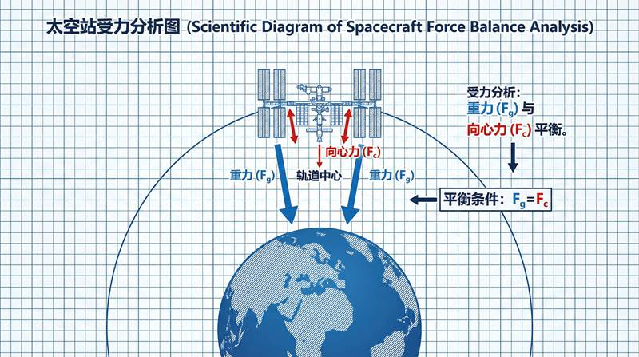
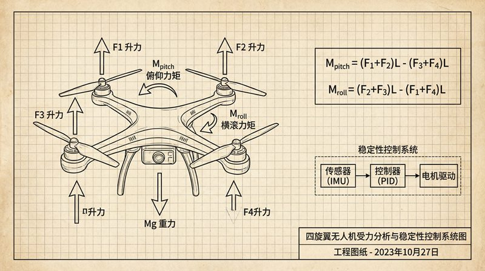

返回课程列表
第五课
能量方法
新能源技术中的能量转换
⏱️ 约40分钟
太阳能、核能、氢能——新能源技术的核心就是能量转换效率。理解能量守恒和转换规律，是理解新能源的基础。
太阳能的能量转换
太阳能电池将光能转化为电能，效率从早期的6%提升到现在的26%以上。光伏发电的物理基础是光电效应。

太阳能技术的能量分析
太阳能转换的效率提升：
- 单晶硅电池：效率约22-26%，是目前主流技术
- 钙钛矿电池：实验室效率已超过25%，成本更低
- 聚光太阳能：用镜面聚焦阳光加热工质发电，效率可达40%
- 太空太阳能：没有大气衰减和天气影响，效率提升约40%
核能与聚变能源
核裂变已商用60年，核聚变是终极能源目标。E=mc²告诉我们，微小的质量亏损可以释放巨大能量。

核能的能量密度
核能技术的能量分析：
- 核裂变：1kg铀-235释放的能量相当于2700吨煤
- 核聚变：1kg氘氚混合物释放的能量相当于1万吨煤
- ITER项目：国际热核聚变实验堆，目标产出10倍于输入的能量
- 人造太阳：中国EAST装置已实现1亿度等离子体运行